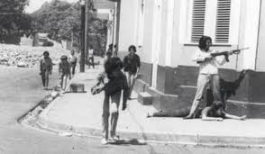

¿Qué fue la guerra del 1965?
Se le conoce como guerra de abril de 1965, al conflicto bélico civil que tuvo lugar en Santo Domingo iniciando el 24 de abril de ese mismo año. Este conflicto tuvo como antecedentes unas series de eventos desde el ajusticiamiento del dictador Rafael Leónidas Trujillo en 1961, Balaguer y los Consejos de Estados 1961-1963, el Gobierno de Juan Bosch en 1963 y su posterior derrocamiento y el gobierno de facto del Triunvirato 1963-1965, hasta desencadenar en la guerra el 24 de abril . El propósito fundamental de la guerra de abril era restablecer al gobierno legítimo encabezado por el profesor Juan Bosch y la Constitución de 1963, quien fue derrocado por un golpe de Estado el 25 de septiembre de 1963 y en su lugar fue sustituido por un gobierno de facto e ilegal denominado el Triunvirato compuesto por tres civiles. Este gobierno se caracterizó por ser una especie de dictadura.
El período comprendido desde el golpe de Estado al Gobierno de Juan Bosch en 1963 hasta 1965 se caracterizó por los movimientos de protestas, levantamientos armados de guerrillas, conspiraciones de parte de la oposición y de la gran mayoría de la sociedad dominicana que pedía el retorno de la constitucionalidad.
Las Fuerzas armadas estaban divididas. Por un lado, los oficiales jóvenes constitucionalistas que defendían el retorno a la constitucionalidad. Este movimiento estaba dirigido por el coronel Rafael Tomás Fernández Domínguez.
Por otra parte estaban los grupos neotrujillistas y balagueristas conocidos como el clan de San Cristóbal, encabezado por militares como el coronel Neit Nivar Seijas; Salvador Montas Guerrero, jefe del Estado Mayor; general Felix Hermida, hijo, y el coronel Braulio Alvarez, que procuraban el regreso de Joaquín Balaguer quien estaba en el exilio para ese entonce. El grupo encabezado por el coronel Elias Wessin y Wessin y el coronel Pedro Benoit, con los militares de San Isidro, por lo que se les conocía como "clan de San Isidro". El Gobierno del Triunvirato encabezado por Donal Reid Cabral contaba con el apoyo de estos.
A dicho acontecimiento se le dan varios nombres como: La guerra constitucionalista de abril de 1965, La Revolución de abril, La guerra civil de abril en Santo Domingo de 1965 y la guerra patria constitucionalista..
Factores que incidieron como causas inmediatas a la guerra.
- La impopularidad del gobierno de facto encabezado por el Triunvirato por su medio de persecución y represión a sus opositores.
- La voluntad de destruir al antiguo ejército trujillista que había permanecido intacto durante los gobiernos del Consejo de Estado, Bosch y el Triunvirato.
- La causa más importante fue la de restablecer a la constitucionalidad y al gobierno legítimo de Juan Bosch derrocado por un golpe de Estado el 25 de septiembre de 1963.
La segunda Intervención Militar Norteamericana del 28 de abril de 1965.
El día 28 de abril se produce la segunda intervención militar de los Estados unidos sobre el suelo de la República Dominicana. Estos utilizaron como pretextos el mismo que en 1916 el de proteger y salvar la vida de los ciudadanos norteamericanos residente en Santo Domingo.
Los diplomáticos de Estado Unidos logran que el coronel Pedro Bartolomé Benoit firmara dos cartas sucesivas que solicitasen la invasión militar, según este porque las Fuerzas Armadas no pueden garantizar el orden para "Salvar vidas norteamericanas" y porque el movimiento constitucionalista ha sido dominado por los "comunistas".
La segunda intervención militar o invasión norteamericana hacia la República Dominicana del 28 de abril cambia la naturaleza de la guerra o la revolución constitucionalista de civil a una guerra patria con el cual los constitucionalistas luchan por la defensa de la soberanía del país antes los invasores y los traidores de San Isidro o CEFA.
Resumen de hechos importantes durante la guerra de abril de 1965
- El 25 de abril fue derrocado el gobierno del Triunvirato encabezado por Donald Reid Cabral.
- Entre el 25 y el 27 de abril se produjo un fuerte bombardeo al Palacio Nacional por parte de la Fuerza Aérea bajo el mando del grupo de San Isidro.
- El 27 de abril se escenificó la batalla del puente Duarte decisiva para los constitucionalistas.
- El día 30 de abril se produjo la toma de la fortaleza Ozama sede de los Casco blancos grupo élite de la policía Nacional.
- El 19 de mayo de 1965, se produjo el asalto al palacio Nacional por parte de los constitucionalistas y en su intento mueren varios oficiales incluyendo al coronel Fernández.
- Domínguez, iIIio Capozzi, italiano entrenador de los hombres rana constitucionalistas y Juan Miguel Román caen por disparos de soldados norteamericanos.
- Entre los días 15 y 16 de junio se produjo el ataca mas feroz por parte de las fuerzas invasoras norteamericanas hacia la zona constitucionalistas en las cuales murieron 67 dominicanos y 16 norteamericanos. Con este ataque los norteamericanos tomaron gran parte de la zona constitucionalistas e hicieron retroceder a los patriotas dominicanos que enfrentaron con valentía y coraje a los invasores.
- El 29 de agosto se produjo el segundo ataque con fuerza de los norteamericanos hacia la zona de los constitucionalistas. Este ataque fue masivo y con gran efecto psicológico para forzar a los constitucionalistas rendirse o a negociar.
El papel de las mujeres en la guerra de abril de 1965.
La mujer dominicana siempre ha jugado un papel preponderante en todos los procesos de luchas por la libertad del pueblo dominicano a lo largo de su historia colonial como Republicana. A igual que en otros momentos, durante la contienda bélica de abril de 1965 realizaron tareas importantes tantos de logísticas, de inteligencia, de instructoras, de curar y atender a los heridos, de combatientes, de maestras como en otras labores en favor de la mejor causa de la revolución de 1965 y por la defensa de la patria.

Entre las mujeres destacadas en la guerra constitucionalistas y patria de abril de 1965 están: Hilda Gautreau, Emma Tavarez Justo, Yolanda Guzmán, Piky Lora, Anina Vargas, Iberia Altagracia Jimenez, Venecia Edith Altagracia Ferreira, Fiume Bienvenida Gomez Sanchez, Milagros Concepcion, Gisela Antonia Mercedes y Ana Joaquina Viñel Taveras y otras. Esta gesta contó con una amplia participación femenina aportando y dando sus vidas por la libertad y la defensa de la soberanía de nuestro pueblo.
AMPLIAR MAS CONOCIMIENTOS EN:
VISITA AL PROFE
VISITA A WIKIPEDIA